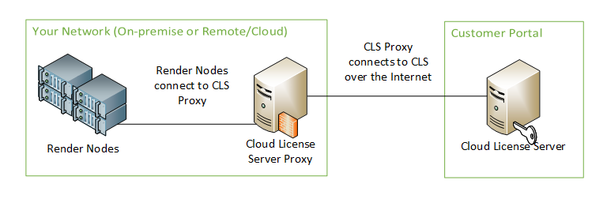
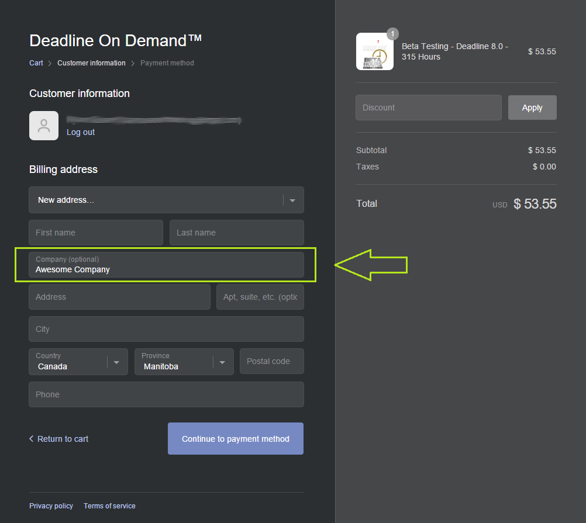
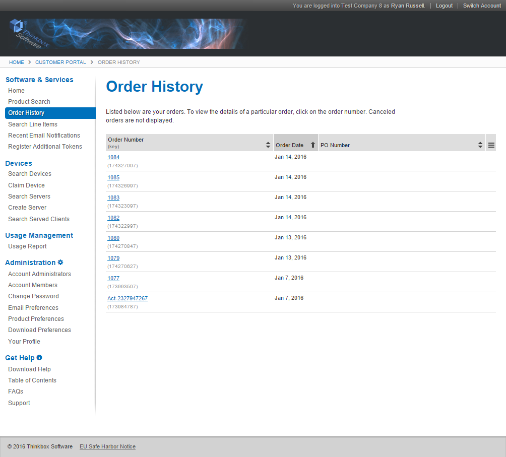
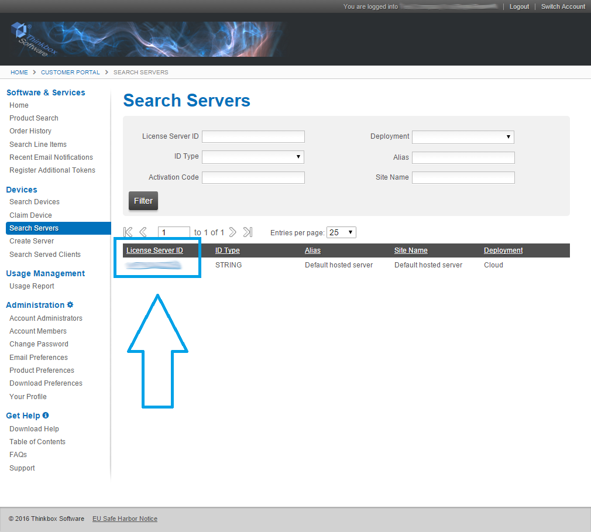
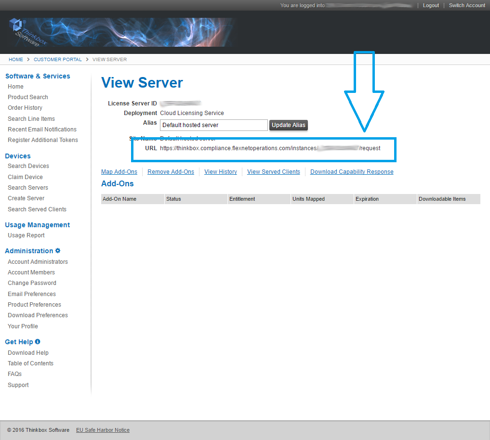
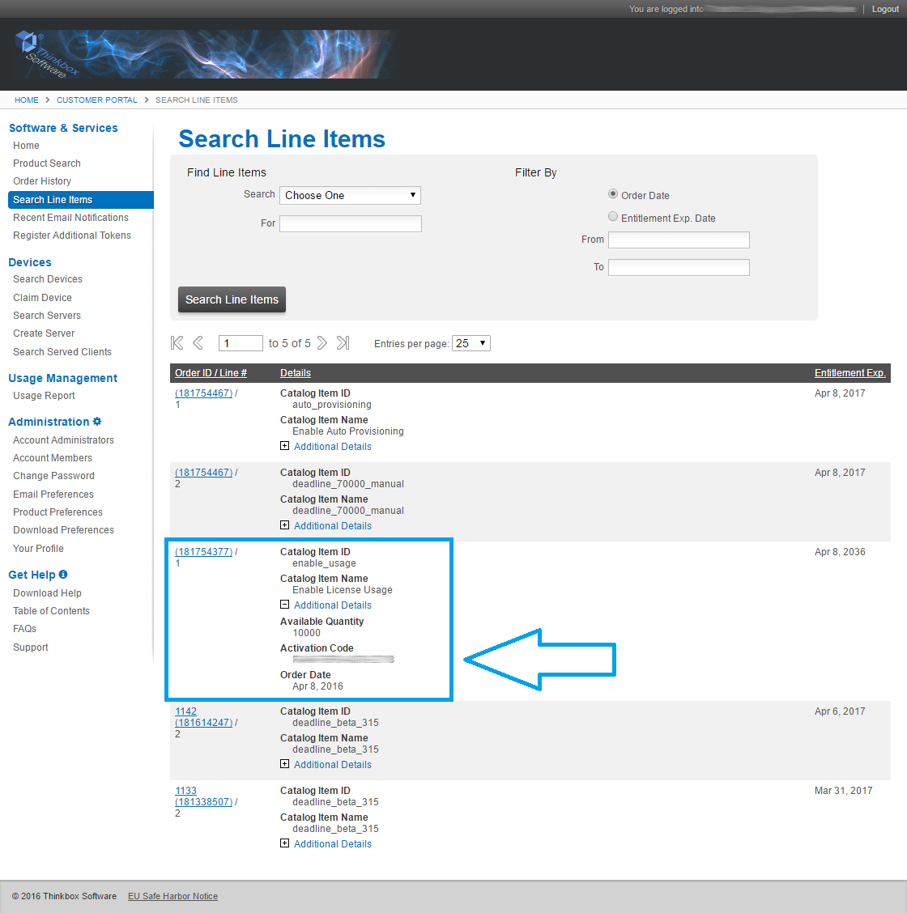
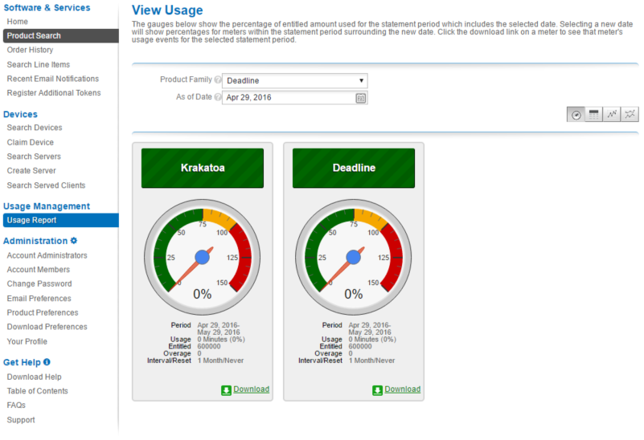

(Unsupported) Legacy Usage-Based Licensing¶
Warning
Topics covered in this page refer to legacy Thinkbox usage-based licensing (UBL), which is no longer available as of September 30, 2025. The UBL feature in Deadline 10 is now available through AWS Deadline Cloud UBL. For detailed setup instructions, please see the Deadline Cloud UBL Documentation.
For more details, please refer to the marketplace website.
Overview¶
Usage-Based Licensing is an on-demand licensing model for select 3rd party products. It can be used as an alternative to floating licenses, or as supplemental licensing to cover temporary increases in render nodes (cloud burst compute, rentals, artist machines overnight, etc). See the 3rd Party Usage-Based Licensing documentation for more information.
There are some new components that are introduced by this Usage-Based Licensing system, which are covered in more detail below:
Cloud License Server: The license server that hosts your Usage-Based Licensing render time.
Thinkbox Marketplace: This is where you can purchase render time bundles for Usage-Based Licensing.
Customer Portal: This is where you can view your render time order history, monitor your render time usage, and view your Cloud License Server.
License Forwarder: The Forwarder is required for 3rd Party Usage-Based Licensing. It allows the rendering products to communicate with Thinkbox’s cloud-hosted License Server Gateway.
Note
Before using Usage-Based Licensing, please review the System Requirements. In addition, you can check out some videos from the Usage-Based Licensing page on the Deadline website, or refer to the Usage-Based Licensing FAQ.
Cloud License Server¶
The Cloud License Server is hosted by Thinkbox via your Thinkbox Customer Portal, and the Deadline Workers connect to it via a URL, which means that your render nodes must have access to the internet. Alternatively, if you have a NO internet access rule, then please see the next section on configuring a Cloud License Server Proxy.
Note
The render nodes require TCP port 443 to be opened for outbound traffic to access the internet to obtain a Deadline Worker UBL token if you are not using Cloud License Server Proxy.

There are many benefits to using the Cloud License Server:
You do not need any additional services running on your local network in order to use Usage-Based Licensing.
Any render time purchased from the Thinkbox Marketplace can be automatically mapped to your Cloud License Server, which means your render nodes can start using that render time without any manual steps.
By associating all Usage-Based Licensing render time with a single Cloud License Server, you can share it across on-premise, remote office and cloud-based render nodes in various regions.
Cloud License Server Proxy¶
When using Usage-Based Licensing with a Cloud License Server, it is normally required that all render nodes have access to the internet. However, this is not always possible due to security reasons. The recommended alternative is to set up a Cloud License Server Proxy on a single machine that does have internet access, and have the Deadline Workers point to it instead. See the Cloud License Server Proxy Documentation for more information.
Our documentation walks you through the steps of installing and configuring a Cloud License Server Proxy using HAProxy on an Ubuntu machine (note that this can be a physical or virtual machine). While there are probably many ways to set up a Cloud License Server Proxy, this is the solution we have tested and we can confirm it works.
Local License Server¶
If using a Cloud License Server or Cloud License Server Proxy is not possible due to security concerns, there is still the option to use the Local License Server. However, we don’t recommend this option because it comes with some significant limitations:
We’ll need to customize your Thinkbox Marketplace account so that any Usage-Based Licensing purchase you make aren’t automatically mapped to your Cloud License Server. You will have to manually map them to your Local License Server going forward.
You cannot share render time between a Local License Server and a Cloud License Server. Once render time is mapped to a Local License Server, you cannot map it to your Cloud License Server later.
The Local License Server cannot be used to consume 3rd Party Usage-Based Licensing. If you want to use 3rd Party Usage-Based Licensing, you must use either the Cloud License Server directly, or a Cloud License Server Proxy.
Due to these limitations, we highly recommend using the Cloud License Server Proxy if security is a concern. Please contact Thinkbox Support if you need help setting up the Cloud License Server Proxy, or if you would like to discuss using the Local License Server.
The Thinkbox Marketplace¶
Before you can purchase any Usage-Based Licensing render time, you must first create a Thinkbox Marketplace account. Visit the Thinkbox Marketplace and click the Create Account link in the top-right corner. Specify your name and email address, and then click the Create button.

After your account has been created, you will receive an email confirming that your Marketplace account was created successfully. The next step is to log into your Marketplace account and purchase some render time.
Purchasing Render Time¶
Now that your Thinkbox Marketplace account has been created, you are ready to purchase some render time! Simply visit the Thinkbox Marketplace, log in with your Marketplace account, and choose the Usage-Based Licensing products you wish to purchase. When you’re ready to purchase, please review your Cart first, and then agree to the Terms and Conditions.
Note
To prevent unexpected issues or interruptions we advise customers to calculate and purchase the total amount of hours needed to complete a given render workload. Depending on your version of Deadline you may experience issues when licenses are exhausted or incremental units are purchased. See Deadline release notes for details by version.
You can now proceed to the Check Out page, where you can enter your billing information. Note that you can enter a Company name in your billing address. If you do, your Customer Portal account name will reflect this after you complete the purchase process (more on this below). In addition, if you have any discount codes, be sure to enter them in before entering in your payment details and completing your order.
Once your order has been processed, you should receive an email confirming your order. If this is your first Usage-Based Licensing purchase, you should receive a second email within five minutes that confirms the creation of your Customer Portal account. This email will also contain the URL for your Cloud License Server, and an Activation Code.
The URL and Activation Code will look like this (in the URL, XXXXXXXXXXXX would be replaced with your Cloud License Server ID):
https://thinkbox.compliance.flexnetoperations.com/instances/XXXXXXXXXXXX/request
XXXX-XXXX-XXXX-XXXX
Note that this information is only emailed out once, so make sure to keep the URL and Activation Code on hand, as you will need this information to configure Deadline for Usage-Based Licensing. If you lose this information, you can log into your Customer Portal to retrieve it (see below).
PER-CORE Render Time¶
Some products in the Thinkbox Marketplace can consume render time on a PER-CORE basis. PER-CORE minutes are consumed based on the number of CORES the rendering machine has. For example, a 4-CORE machine will consume 40 minutes of render time during a 10 minute render.
If a product doesn’t mention that it is PER-CORE, then it consumes render time on a WALL-CLOCK basis. For example, a 4-CORE machine and an 8-CORE machine will both consume 10 minutes of render time during a 10 minute render because the number of CORES doesn’t affect the usage.
The Customer Portal¶
As mentioned above, your Customer Portal account is created automatically after you make your first Usage-Based Licensing purchase from the Thinkbox Marketplace. If you haven’t logged into the Customer Portal before, or if you have lost your password, use the Password Finder link at the bottom of the Portal’s login page, enter your email address, and your password and login ID will be emailed to you. Note that you should enter the email address that you used to create your Thinkbox Marketplace account.
Once you’ve logged in, you’ll be able to view specific information using the navigation side-bar on the left, including:
Order History: This is the default page when you log in, and it shows you your previous order history.
Search Line Items: This can be used to find your Activation Code.
Search Servers: View your Cloud License Server, and review the render time that has been mapped to it. This can also be used to find your License Server ID, which is used to build up the Cloud License Server URL.
Usage Report: View different graphs and tables to show current and historical usage of your render time.
Note that the Home page currently shows an error message stating that No software is currently associated with your Customer Portal account. This is normal, because the actual Deadline product is not associated with the Customer Portal, just the render time entitlements for Usage-Based Licensing.
For more information on using the Customer Portal, refer to the Get Help section on the navigation side-bar.
Cloud License Server URL and Activation Code¶
The Cloud License Server URL and Activation Code are required to configure Deadline to use Usage-Based Licensing. This information was included in the email you received when you made your first Usage-Based Licensing purchase from the Thinkbox Marketplace. However, it’s also possible to retrieve this information from the Customer Portal.
Cloud License Server URL
To get the Cloud License Server URL, you must first find the Cloud License Server ID. This can be done by clicking Search Servers in the side-bar on the left. Here, you will see the ID of your Cloud License Server.
Click on the License Server ID, and the License Server URL will be shown near the top of the page.
For this example, let’s assume the ID is XXXXXXXXXXXX, in which case the URL would look like this:
https://thinkbox.compliance.flexnetoperations.com/instances/XXXXXXXXXXXX/request
Activation Code
To find your Activation Code, click Search Line Items in the side-bar on the left, and look in the Details columns for a line item that has enable_usage as the Catalog Item ID and Enable License Usage as the Catalog Item Name. Expand the Additional Details section for that line item to find the Activate Code. It is in the format XXXX-XXXX-XXXX-XXXX. Note that you might have more than one of these Enable License Usage line items, in which case you just need to pick one that still has an available quantity.
Configuring Deadline¶
Before you can start using Usage-Based Licensing, you must enter the Cloud License Server URL and Activation Code in the Repository Options. This can be done from the Deadline Monitor while in Power User Mode (use the Tools Menu to enter Power User Mode). Then select Configure Repository Options from the Tools menu, and select Usage-Based Licensing from the list on the left. Note that if you are using the Deadline Secrets Management feature, you will need to provide Administrator credentials to save these values.
The Cloud License Server URL and Activation Code was included in the email you received when you first created your Thinkbox Marketplace account. However, if you have misplaced this email, you can get this information from the Customer Portal (see above).

Note that you should have the Cloud License Server box checked unless you are using a Local License Server. In addition, if you are using a Cloud License Server Proxy, the URL will look a bit different. See the Cloud License Server Proxy documentation for more information on configuring Deadline.
Deadline Usage-Based Licensing¶
Note
Starting with Deadline 10.1.23, Deadline and its components do not require a license. This section is left for operators of older versions of Deadline.
Note
This step is only required if you are using Deadline Usage-Based Licensing. You do not need to perform this step if you are only planning on using 3rd Party Usage-Based Licensing.**
Now that Deadline is configured to use Usage-Based Licensing, you need to configure the Deadline Worker applications.
License configuration can be done from the File menu in the Deadline Worker application, or from the Deadline Launcher menu on the machines that the Deadline Worker is running on. If the Deadline Worker is already running, restart it so that it can recognize the licensing change.

Note that if are also using floating licenses for Deadline, you can keep some Deadline Workers configured to use Usage-Based Licensing, and some configured to use your existing Deadline floating license server. You can also use Auto Configuration to configure which Deadline Workers you want to use Usage-Based Licensing automatically.
Third Party Usage-Based Licensing¶
Note
These steps are only required if you are using 3rd Party Usage-Based Licensing.
Before you can start using 3rd Party Usage-Based Licensing, you must do the following:
Purchase 3rd Party render time from the Thinkbox Marketplace.
Download the 3rd Party Licencing Certificates.
Install and configure the Deadline License Forwarder application to use the Certificates.
Set up Deadline Limits to use Third Party Usage-Based Licensing, and configure your render jobs to use these Limits.
Purchasing Render Time
Please visit the Thinkbox Marketplace to see which products are supported, and to purchase render time. Also make sure to review the Usage-Based Licensing Requirements before making a purchase to ensure you are using a supported version of the product.
Certificates
To use Third Party Usage-Based Licensing with Deadline, you will first need to obtain Certificates for each product you will be rendering with. These Certificates ensure a secure connection with Thinkbox’s Cloud-hosted License Server Gateway.
Note
These certificates are automatically added to your Thinkbox Customer Portal when you purchase 3rd Party render time from the Thinkbox Marketplace, but note that it can take up to 30 minutes before the certificates will appear in your Portal account.
To download them Log in to the Thinkbox Customer Portal. using the instructions shown above.
Go to your Home page shown below

Click on the ‘certificate’ link and and you will be shown the certificates download link.

If you do not see the certificates, please contact Thinkbox Sales. Note though that it can take up to 30 minutes after purchase before the certificates will appear in your Portal account.
The License Forwarder
The new License Forwarder application does exactly what it’s name implies. It forwards license requests for 3rd Party products to Thinkbox’s Cloud-hosted License Server Gateway, and must be running on your network before you can start using 3rd Party render time. It must be configured to use the 3rd Party Certificates you obtained from Thinkbox Sales, and it must also have access to the Internet so that it can communicate with the License Server Gateway.
The License Forwarder can run on any machine, but because multiple machines will be connecting to it, we recommend a machine running Windows Server or Linux. See the Client System Requirements for more information. In addition, you should avoid running the Forwarder on a machine that is already hosting other floating licenses servers to avoid potential port conflicts.
To install the License Forwarder, simply run the Deadline Client installer. The Forwarder will be installed to Deadline’s bin directory, and is called deadlinelicenseforwarder.exe on Windows, and deadlinelicenseforwarder on Linux and macOS. Before running the Forwarder though, you must first create a directory on the machine for your 3rd Party Certificates (ie: C:3PL_Certs), and place all the 3rd Party Certificates that you received from Thinkbox Sales into this directory.
The License Forwarder is a console application, so to run it the first time, open a Command Prompt or a Terminal, change directories to the Deadline bin folder, and run it without arguments. For example:
(On Windows)
cd "C:\Program Files\Thinkbox\Deadline[VERSION]\bin"
deadlinelicenseforwarder.exe
(On Linux)
cd /opt/Thinkbox/Deadline[VERSION]/bin
./deadlinelicenseforwarder
(On macOS)
cd /Applications/Thinkbox/Deadline[VERSION]/Resources
./deadlinelicenseforwarder
(where [VERSION] is the major version of Deadline)
The first time the License Forwarder starts up, it will check if it knows where the 3rd Party Certificates are located. If it does not, it will prompt you for a path to the directory that contains them. Enter the path to the directory you created earlier (ie: C:3PL_Certs).
If you need to change the location of the certificates folder, you can do so from the command line or by editing the system deadline.ini file on the machine.
Finally, if you want to start up the Deadline Forwarder automatically when the Deadline Launcher starts, you can add the following line to your system deadline.ini file:
LaunchLicenseForwarderAtStartup=1
Now, if you configure your Deadline Launcher to run as a service, the License Forwarder will run as a service as well! More information on configuring and running the License Forwarder can be found in the License Forwarder documentation.
3rd Party Limits
3rd Party render time is consumed per minute and only while Deadline is rendering a task for a job that requires special Limits. Limits in Deadline have traditionally been used to support applications and plugins that use floating licenses. They enforce the maximum number of concurrent render jobs that use those applications and plugins, which prevents licensing errors from affecting productivity.
Limits can be configured to allow additional Deadline Workers to render these jobs, but these additional Workers will enter an Overage mode. While in Overage mode, the Deadline Workers will redirect license requests for the necessary applications and plugins to the Deadline Forwarder instead of your local license server. At the same time, the Deadline Workers will consume 3rd Party render time until the job has finished (or until the render time has been exhausted). Because Deadline only consumes 3rd Party render time when in Overage mode, your floating licenses will always be preferred.
Note that if you want all Workers to use 3rd Party render time, you can set the Limit field to zero. This will force all Workers to check out this limit in Overage mode.
Once you have your 3rd Party Limit set up, you need to assign that Limit to any Deadline Jobs that use that 3rd Party product. 3rd Party render time usage will then happen automatically, provided that the License Forwarder is running and that the Deadline Workers can communicate with it.
Note
Note that in order to dequeue a Job that uses a 3rd Party Limit there must be credits available for the corresponding 3rd Party product. Credits will only be consumed if a license is actually used for that product if the Auto-detect 3rd Party Usage-Based License Consumption feature is enabled in the Repository Options. Otherwise credits will be consumed while the Job is in the rendering state.
Note that you must be in Power User Mode in the Deadline Monitor to create and modify Limits. For more information about configuring Limits, see the Limits Documentation.
3rd Party Limits Example Using Krakatoa
Let’s say you have 2 floating licenses of Krakatoa, and 4 render nodes that are capable of rendering Krakatoa jobs. To ensure that you don’t run into Krakatoa licensing errors, you would create a krakatoa Limit and set it to 2. Then any job that requires the Krakatoa renderer would specify the krakaota Limit at submission time. This ensures that you won’t run out of licenses because no more than 2 instances of Krakatoa would be used on the farm at any given time.
If you would like all 4 render nodes to join the render, you can configure the krakatoa Limit to allow your other 2 render nodes to use 3rd Party Usage-Based Licensing. First, you will leave the existing Limit maximum at 2, since that is still your floating license count. Instead, you will set the Limit Overage to 2 so that your additional render nodes can pick up Krakatoa jobs. Finally, you need to enable the Use Usage-Based Third Party Licensing option and select krakatoa as the License Application. After you press OK, you are now ready to consume Krakatoa 3rd Party render time!

When the additional 2 render nodes pick up your Krakatoa jobs, they will recognize that they are in Overage mode, and will consume Krakatoa render time instead of connecting to your local Krakatoa license server. Because Krakatoa render time will only be consumed in Overage mode, it ensures that Deadline always prefers your existing floating licenses before using 3rd Party render time!
Monitoring Render Time Usage¶
You can log into your Customer Portal at any time to review your order history and monitor the usage of your render time.
Important notes about render time usage:
When the Deadline Workers check out render time, they do so in 5 minute increments, and will hold on to those minutes until they are used up (at which point they will request 5 more minutes). Keep this in mind when viewing your Usage Report in the Thinkbox Portal.
Render time is consumed during the entire duration of a Task, between when a Task starts and when it finishes.
Unlike Floating Licenses, Usage-Based Licensing for Deadline and 3rd party products is consumed on a per-Worker basis. For example if you have 2 Workers on the same machine each render a task over a 5 minute period, you will consume 10 minutes of Deadline render time.
Rendering overhead (launching the rendering application, loading the scene file, etc) is included in the total Task time, and therefore will consume render time. In cases where Task times are quick, it might be beneficial to increase the number of frames per task to reduce this overhead.
When the Deadline Worker exits, any unused minutes are then returned. Note that killing the Deadline Worker can result in a loss of minutes, since it won’t have a chance to return them. This loss cannot be reverted, so always make sure you close your Deadline Workers properly!
Auto-detect 3rd Party Usage-Based License Consumption¶
If this feature is enabled, the Worker will run a port forwarder for Third-Party Usage-Based Licensing. This port forwarder will accept license traffic from the render application and forward it to the License Forwarder. It will also act to ensure that credit consumption is not started until a license request has been made. If this is enabled, the License Forwarder and the Worker will not be able to run on the same machine due to port binding conflicts. If disabled, all license traffic from the render application will go straight to the License Forwarder. Changing this setting requires restarting the Workers to take effect.

{kind=link}
{kind=link}
{kind=link}
{kind=link}
{kind=link}